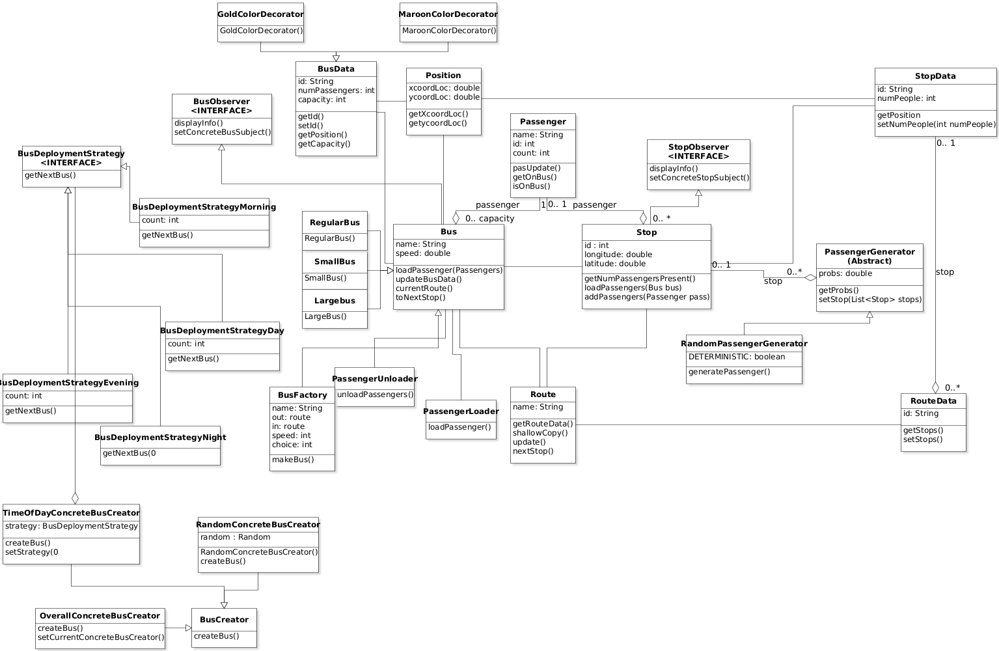
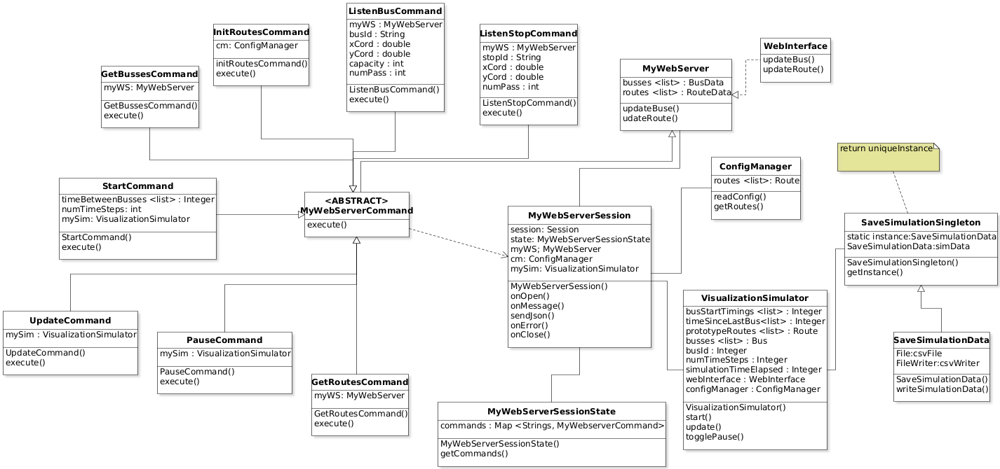

Introduction
This Iteration(3) of the Project is created by Javier and Noah.
This Project is considered a Visual Transit Simulator.
The VTS software is divided into two main modules: The Visualization Module and the Simulator module.
The Visualization Module displays the state of the simulation in a browser, while the Simulator Module performs
the simulation.
The Visualization Module is a web client application that runs in a browser and it is written in Javascript and
HTML.
The Visualization Module code is inside the ./src/main/webapp/web_graphics directory of this repo.
The Simulator Module is a web server application written in Java.
The Simulator Module code is inside the ./src/main/java/edu/umn/cs/csci3081w/project directory.
The Simulator Module is divided into two parts: domain classes and the web server.
The domain classes model real-world entities (e.g., the concept of a bus) and the code is inside the
./src/main/java/edu/umn/cs/csci3081w/project/model directory.
The web server includes the code that orchestrates the simulation and is inside the
./src/main/java/edu/umn/cs/csci3081w/project/webserver directory.
NEW: The Software also includes the new feature of saving Data from simulations ran. The software will save the information in a file of
format csv (File name will be SimulationUpdates.csv). This csv format will be in style of Busses printing first with their respective information in-row, followed by all of the stops
labeled by their ID's in their respective row. This file can be found in the root directory of the repository (./ or where you have
decided to clone this project). This should appear next to the source code along with the documentation folder.
The Visualization Module and the Simulator Module communicate with each other using websockets.
Running this VTS: you first start the Simulator Module and then start the Visualization Module.
To start the Simulator Module, go to local directory and run ./gradlew appRun.
To start the Visualization Module, open a browser and paste this link
http://localhost:7777/project/web_graphics/project.html in its search bar.
To stop the Simulator Module, press the enter/return key in the terminal where you started the module.
To stop the Visualization Module, close the tab of browser where you started the module.
The simulation is based on the ./src/main/resources/config.txt configuration file. If you wish to choose
different locations around the University, you must add exact coordinates of where a Bus Stop would like to
be placed. One way to do this is to use Google Maps which provides longitude (first) and latitude (second). You may
change the
population probability as you please. The Routes operate west bound to east bound so addition of a stop means there must
be
a corresponding stop adjacently across a street.
Notes:
The current VTS software models bus transit around the University of Minnesota campus. The software simulates the
behavior of busses and passengers on campus. Specifically, the busses go along a route, make stops, and pick up/drop off
passengers.
The simulation operates over a certain number of time units.
In each time unit, the VTS software updates the state of the simulation by creating passengers at stops, moving busses
along the routes, allowing a bus to pick up passengers at a stop, etc.
The simulation is configured using a configuration file that specifies the simulation routes, the stops of the routes,
and how likely it is that a passenger will show up at a certain stop in each time unit.
Routes must be defined in pairs, that is, there should be both an outgoing and incoming route and the routes should be
specified one after the other.
The ending stop of the outgoing route should be at the same location as the starting stop of the incoming route and the
ending stop of the incoming route should be at the same location as the starting stop of the outgoing route.
However, stops between the starting and ending stops of outgoing and incoming routes can be at different locations.
After a bus has passed a stop, it is possible for passengers to show up at stops that the bus has already passed.
For this reason, the simulator supports the creation of multiple busses and these busses will go and pick up the new
passengers.
Buses can be of three sizes; Small, Regular, and Large Buses. Their capacities are 30, 60, and 90 respectively.
These Buses are randomly chosen using the Java Random Class.
Each bus has its own understanding of its own route, but the stops have relationships with multiple buses.
Buses do not make more than one trip through their routes.
When a bus finish both of its routes (outbound and inbound), the bus exits the simulation.
UML Class Diagram for Domain Classes

Uml class diagram for domain classes.
UML Class Diagram for Web Server Classes

UML Class Diagram for the Web Server side of the Project Iteration.